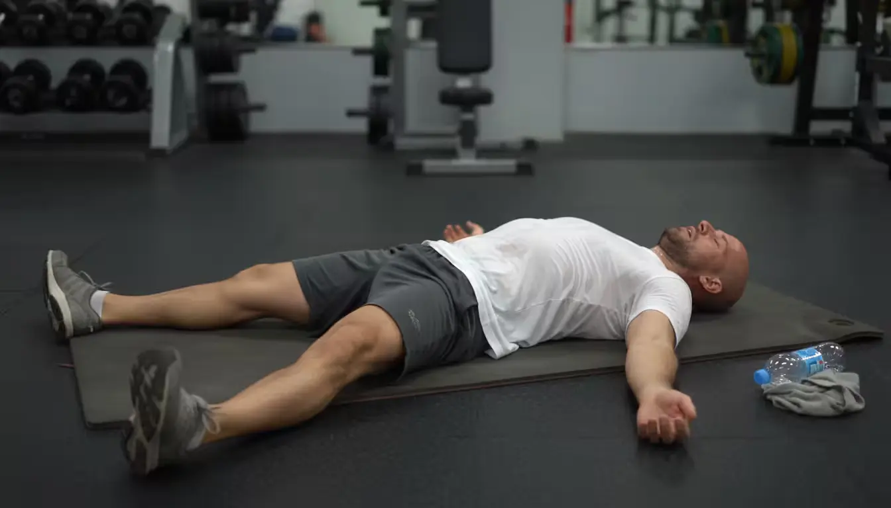
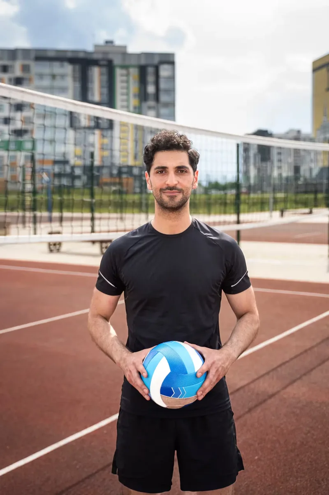

Performance e gara
Alimentazione periodizzata sui carichi di lavoro, con strategie per gare, trasferte e fasi intense della stagione.
Scopri nutrizione sportivaPiani alimentari su misura per atleti e sportivi, costruiti sui tuoi carichi di lavoro, sulle gare e sui tuoi obiettivi fisici. Si parte da una visita completa.

Che tu giochi un campionato, ti alleni per una gara o voglia cambiare composizione corporea, il piano parte da te e dal tuo calendario.
Alimentazione periodizzata sui carichi di lavoro, con strategie per gare, trasferte e fasi intense della stagione.
Scopri nutrizione sportivaRidurre massa grassa o costruire massa magra in modo sostenibile, senza sacrificare energia e prestazione.
Scopri composizione corporeaReintegro post-allenamento e integrazione mirata a sostegno di forza, recupero e continuità degli allenamenti.
Scopri recupero e integrazioneColloquio, plicometria, impedenziometria e piano personalizzato: come funziona la visita di partenza.
Scopri prima visitaUna dieta improvvisata sabota il lavoro che fai in palestra e sul campo.

Arrivi a metà seduta già scarico e perdi lucidità nei momenti decisivi.
Dolori che non passano, gambe pesanti, la sensazione di non ricaricare mai.
Tendiniti e dolori articolari che frenano i tuoi progressi.
Non una dieta generica: una strategia costruita su carichi di lavoro, gare e obiettivi. Smetti di improvvisare e ragiona da atleta.
Sport, ruolo, calendario gare, abitudini e obiettivi: si parte da te.
Visita completa con plicometria e impedenziometria per fotografare il punto di partenza.
Alimentazione calibrata sul tuo sport: quello che mangi segue il tuo carico di lavoro.
Controlli periodici per mantenere la condizione e gestire integrazione e recupero.

Quando cambi strategia, cambi risultati.
Dopo un infortunio serio alla spalla, un intervento e mesi di stop, avevo perso ritmo, fiducia e controllo. E avevo preso molto peso. Ho deciso di non "provare", ma di cambiare direzione.
Niente soluzioni drastiche: un'alimentazione completa, sostenibile, integrata con l'allenamento. Mese dopo mese mi sono sentito più forte, più leggero, più sicuro. In campo e fuori.
Risultati individuali, non garantiti. Ogni percorso dipende dalla persona e dal suo punto di partenza.
Visita più completa mai vista: plicometria e impedenziometria, piano alimentare completamente adattato alle mie esigenze.
Professionista competente e appassionato. Conosce la materia di cui parla e trasferisce la sua competenza in modo impeccabile.
Non si tratta di una dieta standard, ma di una rieducazione alimentare che corregge a dovere le abitudini senza inutili stravolgimenti.
Professionista competente e preparato, capace di spiegare ogni aspetto in modo chiaro e dettagliato.
Ho apprezzato molto la sua sincerità e l'approccio orientato a un cambiamento duraturo.
Sempre disponibile, attento e preparatissimo, riesce a creare un percorso personalizzato che tiene davvero conto degli obiettivi della persona.
Nessuna dieta drastica, nessun obbligo: scrivimi la tua situazione e ti rispondo con calma. Non serve essere un atleta professionista.
Dal primo approccio strutturato al supporto costante. Per costi e disponibilità scrivimi su WhatsApp.
Per iniziare con un metodo strutturato e costruire basi solide.
Per chi si allena con costanza e vuole consolidare risultati e performance.
Per atleti evoluti per cui la performance è una priorità concreta.
Se resti inattivo per più di 6 mesi, il pacchetto non è più valido.
Tre studi in provincia di Napoli e Caserta: scegli quello più comodo.
Costruisce un piano alimentare sul tuo sport, sui tuoi carichi di allenamento, sul calendario gare e sui tuoi obiettivi: energia, recupero e composizione corporea. Non una dieta generica, ma una strategia che segue quello che fai davvero.
La prima visita è completa: raccolta di storia, abitudini e obiettivi, valutazione della composizione corporea con plicometria e impedenziometria, e costruzione del piano alimentare personalizzato. Scopri come funziona.
No. Il percorso è pensato per chi si allena con costanza, a ogni livello: dal praticante amatoriale all'agonista.
Ho tre studi: Villaricca (Via Torino 58), Agerola (Via Antonio Coppola 44) e San Nicola la Strada, vicino Caserta (Via Eugenio Montale 13, giovedì dalle 10:00 alle 20:00).
Scrivimi su WhatsApp al +39 342 510 5288 o usa il modulo in pagina: ti rispondo con le disponibilità dello studio più comodo per te.
Dipende dal pacchetto scelto (Bronzo, Silver o Gold) e dal numero di controlli previsti. Per costi e disponibilità scrivimi su WhatsApp: ti rispondo con tutti i dettagli.
Sì: se resti inattivo per più di 6 mesi, il pacchetto non è più valido.
No. I risultati sono individuali e dipendono dalla persona e dal suo punto di partenza. Il mio impegno è costruire un percorso sostenibile e seguirti nel tempo.
Raccontami il tuo obiettivo e vediamo insieme se il mio percorso fa per te. Ti rispondo su WhatsApp.